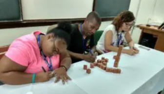
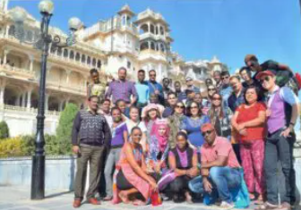
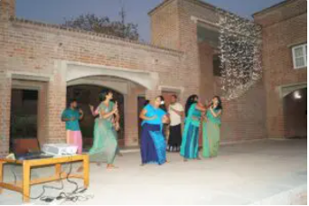

On September 15, 1964, the Indian Technical and Economic Co-operation programme, popularly known as ‘ITEC’ was instituted as a bilateral programme of assistance of the Government of India, in partnership with developing countries. Under ITEC, total 161 countries from Asia, Africa, East Europe, Latin America, the Caribbean as well as Pacific and Small Island countries were invited to share an Indian development experience acquired over seven decades of India’s existence as a free nation. ITEC is response oriented and addresses the needs of developing countries. As a result of different activities under this programme, there is now a visible and growing awareness among other countries about the competence of India as a provider of technical know-how and expertise as well as training opportunities, consultancy services and feasibility studies. It has also generated immense goodwill and substantive co-operation among the developing countries.
IETC is the flagship programme of the Indian Government’s capacity building effort; it covers the wide geographical area and implements innovation forms of technicalities. Through the major activity of capacity building, professionals and people from developing countries are offered unique training courses, both civilian and defence in different centres of excellence in India. It has prepared them for professional skills and the globalised world. Since its inception in 1964, India has trained thousands of trainees in ITEC and Special Commonwealth African Assistance Programme (SCAAP) partner countries.
EDII’s association with ITEC division of the Ministry of External Affairs, Govt. of India, started in 2000-2001. Over these 22 years of fruitful association, the institute has organised 175 training courses (171 short-term and 4 long term courses), encompassing various facets of entrepreneurship promotion. These courses have built the skill capacities of officials and strengthen bilateral and regional ties with ITEC countries.
|  |  |  |
“EDII designed a very interesting training programme especially tailormade for the facilitators, trainers, and mentors of Bhutan region. The sessions were fruitful and well delivered by the trainers. We have been passionate about training students from diverse backgrounds but when it comes to Mentoring, we were facing a challenge. EDII training has made me understand my roles and responsibilities as a Mentor.”
“The Women Empowerment course positively influenced my life! I changed my attitude to my work, my life vision & even my mission. I launched Women Empowerment Course in English language, applied to the U.S. Embassy, and they approved and invested in my project.”
“Since I was working with very limited resources, the idea of clustering assisted me to link up with other departments to share resources and skills. I managed to establish flagship projects in the district that I was operating. I was promoted to the post of District Development Officer.”